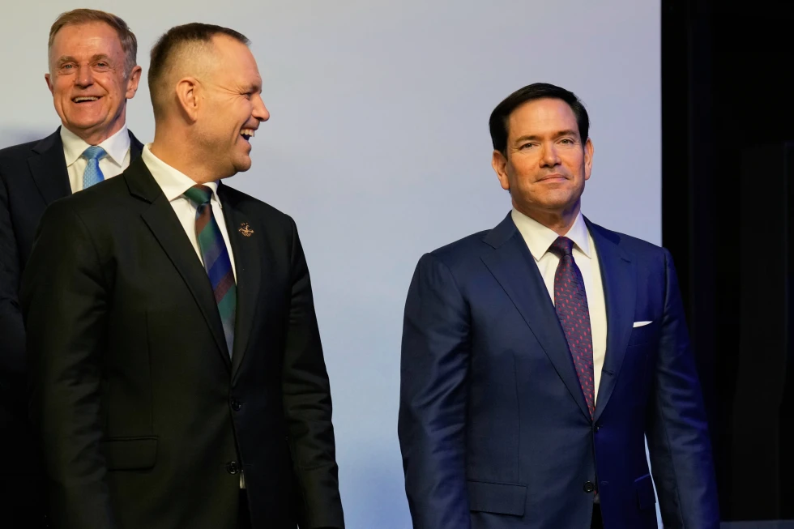

Monday, June 29, 2026
LIVE 8hrs ago
U.S. Secretary of State Marco Rubio, right, looks on ahead of a group photo at the Heads of states dinner, at the 2026 Winter Olympics, in Milan, Italy, Thursday, Feb. 5, 2026.


WASHINGTON — Secretary of State Marco Rubio is leading a large U.S. delegation this week to the Munich Security Conference where increasingly nervous European leaders are hoping for at least a brief reprieve from President Donald Trump’s often inconsistent policies and threats that have roiled transatlantic relations and the post-World War II international order.
A year after Vice President JD Vance stunned assembled dignitaries at the same venue with a verbal assault on many of America’s closest allies in Europe, accusing them of imperiling Western civilization with left-leaning domestic programs and not taking responsibility for their own defense, Rubio plans to take a less contentious but philosophically similar approach when he addresses the annual gathering of world leaders and national security officials Saturday, U.S. officials say.
The State Department’s formal announcement of Rubio’s trip offered no details about his two-day stop in Munich, after which he will visit Slovakia and Hungary. But the officials, who spoke on condition of anonymity to preview the trip, said America’s top diplomat intends to focus on areas of cooperation on shared global and regional concerns, including in the Middle East and Ukraine as well as China, an economic powerhouse seeking to take advantage of the uncertainty in U.S.-European ties.
Should that be the case, many in the audience may be relieved after being buffeted first by Vance’s blunt rebukes last year and then a series of Trump statements and moves in the months since that have targeted virtually every country in Europe, Canada and long-standing allies in the Indo-Pacific.
Trump’s recent comments about taking control of Greenland from NATO member Denmark and insults hurled at various leaders were particularly unnerving, leading many in Europe to question the value of the U.S. as an ally and partner.
That leaves Rubio with a heavy lift if he wants to calm the waters.
Vance’s speech last year was “really a shock moment,” said Claudia Major, a senior vice president at the German Marshall Fund in Berlin. “It was perceived as the first very clear statement of what the new Trump administration was about,” namely that “Europeans are not partners any longer.”
“There is a big doubt whether the basis (of trust) is still there and whether we still share the same vision for the trans-Atlantic relationship,” she said. “The longer this kind of estrangement goes, the more difficult it will be to re-find a solid relationship.”
Munich Security Conference chairman Wolfgang Ischinger offered a similar view.
“Transatlantic relations are currently in a significant crisis of confidence and credibility,” he said this week. But he also expressed hope that Rubio and the dozens of U.S. lawmakers expected to attend the meeting will offer a less dire and dour prognosis for the future.
German Chancellor Friedrich Merz, whom Rubio will meet Friday, has tried to adopt a middle line to deal with Trump’s unpredictability and insistence on transactional relations.
He said Europe also needs to “learn the language of power politics” to assert itself, for example, by taking greater responsibility for its security, striving for greater “technological independence” and boosting its economic growth. But he stressed that “as democracies, we are partners and allies and not subordinates” of the U.S.
Some, like French President Emmanuel Macron and Canadian Prime Minister Mark Carney, appear to have all but given up on Trump and the United States. Both Canada and France opened consulates in the Greenlandic capital, Nuuk, last week in a show of support for both Greenland and Denmark.
Macron warned this week that tensions between Europe and the U.S. could intensify after the recent “Greenland moment.” He described the Trump administration as “openly anti-European” and seeking the European Union’s “dismemberment.”
“When there’s a clear act of aggression, I think what we should do isn’t bow down or try to reach a settlement,” he said in an interview with several European newspapers. “I think we’ve tried that strategy for months. It’s not working.”
Macron noted a “double crisis: We have the Chinese tsunami on the trade front, and we have minute-by-minute instability on the American side.”
Carney — who drew applause from many for pushing back against Trump in a speech last month at the World Economic Forum meeting in Davos, Switzerland — has made no secret of his frustration and impatience with the Republican president.
Carney has emerged as a leader of a movement for countries to find ways to link up and counter the U.S. He vowed to pursue trade deals with countries other than the U.S., including China, to serve as anchors of commercial stability. The China deal drew new threats from Trump.
For many in Europe, Trump’s intentions regarding Greenland exacerbate their fears over Russia’s war with Ukraine and serve as a reminder of centuries of power politics in which diplomacy was subordinate to the use of military force.
“Greenland is to Trump as, essentially, Ukraine is to (Russian President Vladimir) Putin, although obviously without the devastating war at this stage,” said Fiona Hill, a Russia expert who served on the White House National Security Council during Trump’s first term in office.
In the meantime, as Trump tries to mediate an end to the Russia-Ukraine war and seek a nuclear deal with Iran, Europeans are increasingly uneasy about Trump’s “Board of Peace,” a 27-member group of world leaders tasked first with handling the Gaza peace agreement but eventually envisaged as a vehicle for resolving other major conflicts.
Germany, France, Britain, Italy, Norway and Sweden, among others, have either declined to accept or have not yet signed on to the board, which will hold its first meeting to raise money for Gaza in Washington on Feb. 19.